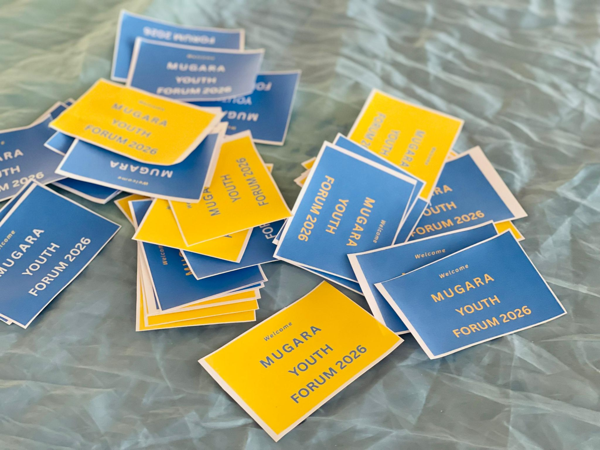
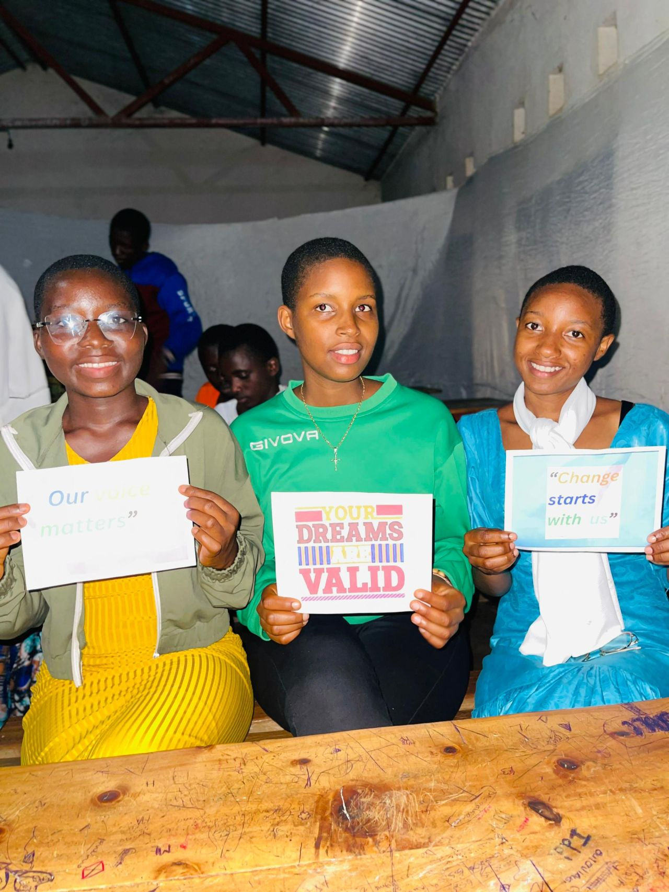
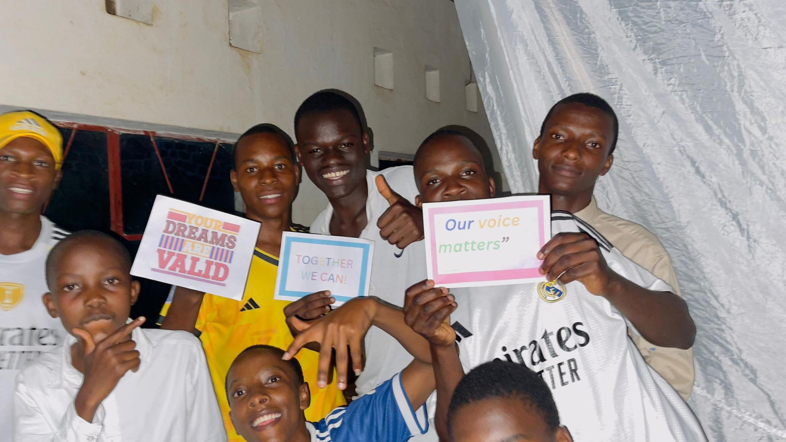

50 young minds gathered for personal development and design thinking
On April 11-12, YEMC brought together 50 young minds in Mugara, Rumonge, Burundi for a powerful Youth Forum focused on personal development and design thinking.
In a community where opportunities are often limited, these young people stepped forward with courage, identifying real challenges they face and boldly designing solutions for change. From education barriers to social issues, their ideas reflected resilience, creativity, and hope.
At YEMC, we believe in empowering youth and connecting them to opportunities they have never had access to. This forum was more than a training; it was a space for growth, collaboration, and transformation.
The energy, ideas, and commitment we witnessed remind us that the future of Mugara is in capable hands.